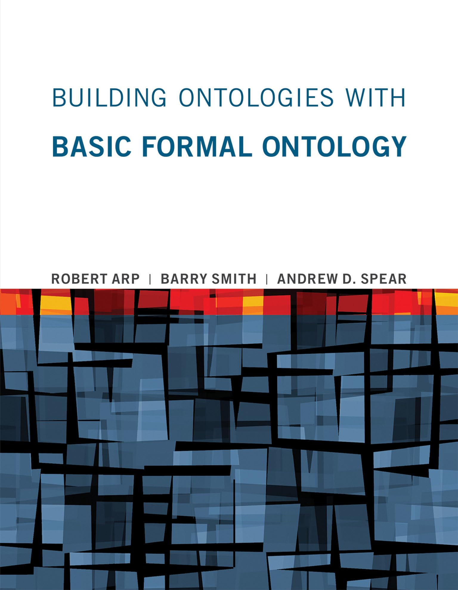
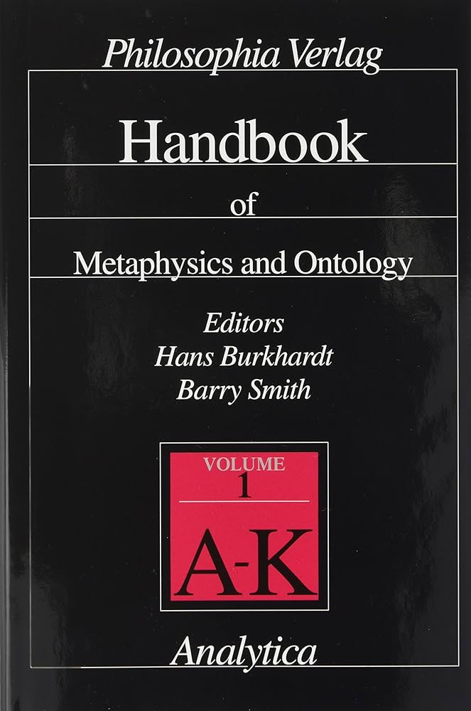
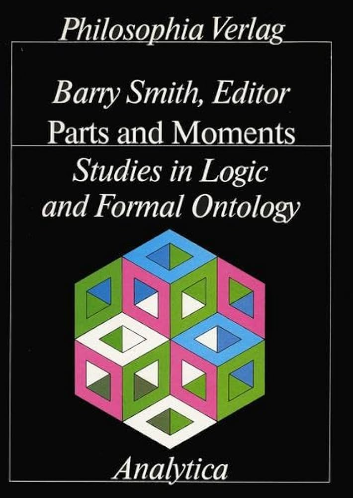

Books
Why Machines Will Never Rule the World: Artificial Intelligence Without Fear
Jobst Landgrebe and Barry Smith
1st edition (2022)
2nd edition (forthcoming)

Building Ontologies With Basic Formal Ontology
Robert Arp, Barry Smith, and Andrew D. Spear
2015
Austrian Economics: Historical and Philosophical Background
Wolfgang Grassl (editor) and Barry Smith (editor)
2011
Applied Ontology: An Introduction
Katherine Munn (editor) and Barry Smith (editor)
2008
The Mystery of Capital and the Construction of Social Reality
Barry Smith (editor), David Mark (editor), and Isaac Ehrlich (editor)
2008
John Searle
Barry Smith (editor)
2003
European Philosophy and the American Academy
Barry Smith (editor)
1999
The Four Phases of Philosophy
Balázs M. Mezei and Barry Smith
1998
The Cambridge Companion to Husserl
Barry Smith (editor), David Woodruff Smith (editor)
1995
Austrian Philosophy: The Legacy of Franz Brentano
Barry Smith
1994

Handbook of Metaphysics and Ontology, Volume 1
Hans Burkhardt (editor) and Barry Smith (editor)
1991
Foundations of Gestalt Theory
Barry Smith (editor)
1988

Parts and Moments: Studies in Logic and Formal Ontology
Barry Smith (editor)
1982